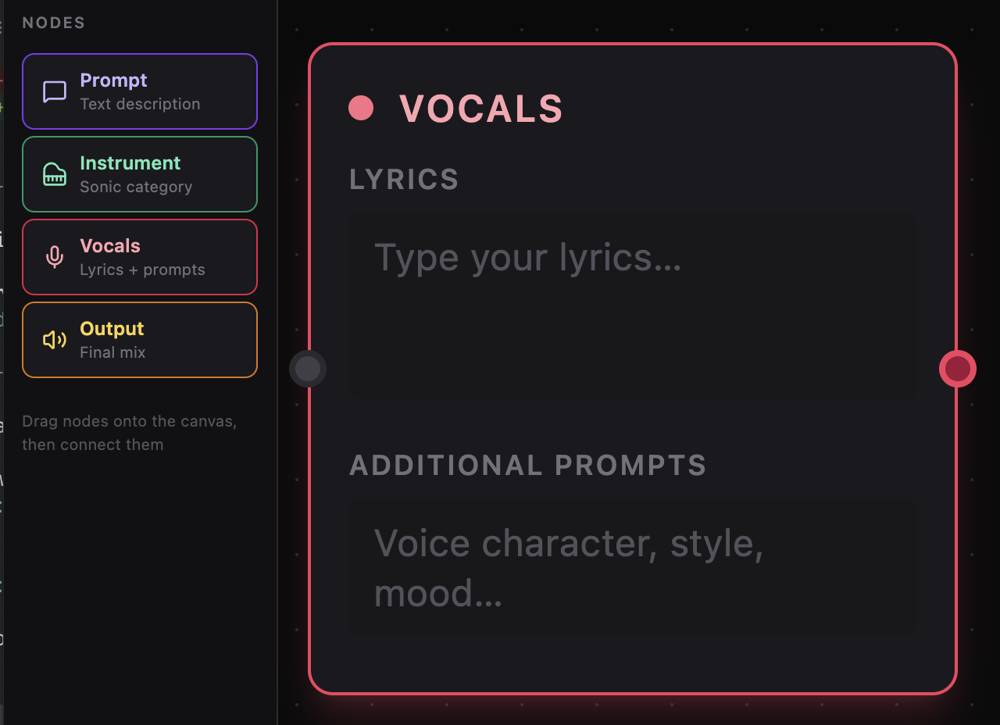

Vocals Editor
Shape The Vocal Direction In A Surface That Stays Effortless.
Write lyrics, guide the tone, and refine the mood in one quiet, focused place. It keeps the session feeling fluid, so the idea stays in motion while the details come into focus.